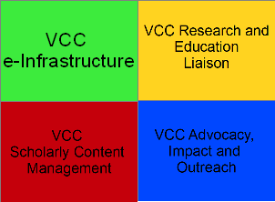
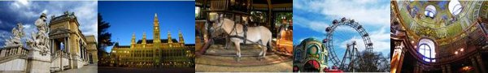

|
Latest News
The Open Research Area (ORA) partners are pleased to announce their third joint call for proposals. The current partners ( ANR, DFG, ESRC, NWO) are delighted to welcome the United States National Science Foundation ( NSF) to the 2012-13 round of the scheme.This will establish the ORA plus scheme, allowing US researchers to collaborate in ORA projects. Through this expansion, thousands of new researchers will be available for cooperation in ORA applications, offering interesting opportunities to cooperate on a wider scale. This change means that there are now five countries participating in the next call: France, Germany, the Netherlands, United Kingdom and the United States. Proposals will be accepted for research projects in any area of the social sciences involving researchers from any combination of three or more of the participating countries.Unlike previous rounds, ORA will not accept applications for proposals from only two countries. In this pilot phase of ORA plus, this is necessary to manage demand for what is already a very popular scheme, and to ensure proposals can be assessed in a timely fashion. The partners will continue to review the response to the scheme and consider what steps may be taken to support bilateral research collaboration in future through ORA or other mechanisms. The call for proposals will be made available via the NWO website. The closing date is 15 February 2013. If you have any further questions, please email ora@esrc.ac.uk
The Information Technology age has facilitated many significant changes in the field of cultural heritage and continues to be a dynamic and exciting forum for the emergence of new possibilities. This wave of change has had particularly significant consequences in the field of the Performing Arts, where the vast potential for digital content and new information technology exploitation continues to reveal itself, opening the doors to new and as-yet-unexplored synergies. Many technological developments concerning digital libraries, media entertainment, and education are now fully developed and ready to be exported, applied, utilized, and cultivated by the public.
The ECLAP 2013 conference is open to researchers, professionals, industries, institutions, technicians, and practitioners in the area of performing arts and information technologies, media entertainment, technology enhanced learning, intelligent media systems, acoustic systems, cultural heritage, open data, content management, semantic models, metadata standards, and many others. The ECLAP conference aims to create a forum in which progress-oriented individuals and institutions within the aforementioned professions can find a place to collaborate and present results. We cordially invite all interested groups and individuals to submit proposals for sessions within the event, sessions, papers, posters and exhibitions. Each exhibition session offers space (booths and tables) to host demonstrators. Demo and poster sessions will also be organized.
Wednesday, 28 November 2012
After the success of the 1st DARIAH-EU General VCC meeting which took place on 2 - 3 April 2012 in Utrecht, The Netherlands, we are very pleased to announce that on behalf of DARIAH-Austria, our colleagues from the Centre of Translation Studies (University of Vienna) and the Institute for Corpus Linguistics and Text Technology (Austrian Academy of Sciences) will kindly host our 2nd DARIAH-EU General VCC meeting at the University of Vienna on 28 - 30 November 2012. Date and place: 28 - 30 November 2012, University of Vienna, Centre of Translation Studies
Programmes: Please have a look at the general programme (update: 28 November 2012). Session programmes: VCC1, VCC2, VCC3, VCC4, Cross VCC2/4, Cross VCC1/VCC3 Presentations: Registration: Please use the registration tool. Choose the DARIAH VCC meeting registration form, click on “Guest Account”, and go to Login without entering an account name or password. Don't forget to let us know if you would to attend the conference dinner. Attendees: See here the list of attendees (update: 26 November 2012) Practical information needed? Please click here. Our conference dinner will take place here. (Währinger Park, bus 35A to Salmannsdorf (app. 17 minutes) stop Neustifft am Walde, 2 mts walk to Heuriger Wolff). Google map with restaurants, supermarkets, bank and pharmacies around the venue. Organisation team: Charly Moerth, Bartholomäus Wloka, Claudia Resch, Barbara Berger-Kulik, Vesna Lusicky, Henk Harmsen, Lisa de Leeuw, Gaithrie Ganesh, Sally Chambers, and Ele Kraft Follow us on twitter: #DARIAHeu For further information, please contact dariah-info at dariah.eu 
|
Wednesday, 21 November 2012
Digital technologies have opened up a wealth of methodologies that can augment and enhance more traditional research practice, allowing new ways to engage with the ever-growing web of digital data. This one-day workshop sponsored by NeDIMAH with support from DARIAH will provide an introduction to these methods.
As part of the network’s ongoing work, Trinity College’s Long Room Hub will be the venue for a free one-day symposium to analyse and evaluate the methods thus far developed within the network, and identify ways in which it can further assist scholarly research being carried out in the Digital Arts and Humanities.
This workshop will focus on the core areas which NeDIMAH has been investigating: space and time; information visualisation; linked data and ontological me thods; building and developing collections for digital data for research; using large-scale text collections for research; digital scholarly editions; and the impact of digital methods on scholarly publishing. thods; building and developing collections for digital data for research; using large-scale text collections for research; digital scholarly editions; and the impact of digital methods on scholarly publishing.
We invite digital humanists at all different career levels, from MPhil students advanced researchers, to join us for this event. Your experience and feedback is vital to the ongoing work of NeDIMAH and DARIAH.
The event is free but registration is required at http://nedimahdublin2012.eventbrite.com/# Date: 27 November 2012, time: 9.00 - 3.00
Thursday, 08 November 2012
The International Symposium on Grids and Clouds (ISGC) 2013 will be held at Academia Sinica in Taipei from 17-22 March 2013, with co-located events and workshops. The conference is hosted by the Academia Sinica Grid Computing Centre (ASGC).
For more than a decade, ISGC has been tracking the advances in distributed computing across the Asia Pacific region and leading the development of regional e-Science activities and collaborations around the world. With the continuous support and dedication from the delegates, ISGC has provided the primary international distributed computing platform where distinguished researchers and collaboration partners from around the world share their knowledge and experiences.
The theme of ISGC 2013 is Collaborative Simulation, Modelling and Data Analytics in Grids and Clouds. Submission deadline: 09 November 2012 For further information please visit the website http://indico3.twgrid.org/indico/conferenceDisplay.py?confId=357
Wednesday, 07 November 2012
 CENDARI CENDARI (Collaborative European Digital Archive Infrastructure) invites applications for its Visiting Research Fellowship Programme for 2013. The fellowships are being funded through the CENDARI project by the European Union’s Seventh Framework Programme for Research. Visiting Research Fellowships are available in the following CENDARI partner institutions - Trinity College Dublin, Ireland
- King’s College London, UK
- National Library of the Czech Republic, Czech Republic
- University of Goettingen, Germany
- University of Stuttgart and Bibliothek fuer Zeitgeschichte, Germany
Two Fellowships in each institution will be awarded, on a competitive basis. These fellowships, which include a stipend for living expenses and travel to and from the host institution, will provide researchers with access to nationally and internationally significant archival collections and specialist knowledge in the two broad thematic areas piloted by CENDARI: - The First World War
- Medieval European Culture
For more information and to download the information and application form, please go to http://www.cendari.eu/visiting-research-fellowships-2013. The closing date for receipt of applications is 12th December 2012. All applications should be sent by email to info at cendari.eu with the title “CENDARI Fellowship 2013” in the email title line.
 EHRI (European Holocaust Research Infrastructure) invites applications to its two summer schools on Holocaust studies in 2013. The summer schools are being funded by the European Union. EHRI (European Holocaust Research Infrastructure) invites applications to its two summer schools on Holocaust studies in 2013. The summer schools are being funded by the European Union.
The first EHRI summer school will be organized by the Shoah Memorial – Museum, Center for Contemporary Jewish Documentation, Paris, France between 15 July and 2 August 2013. The second EHRI summer school will be organized by the Institute of Contemporary History Munich – Berlin in Munich, Germany between 22 July and 9 August 2013. The main language of communication during the summer schools will be English, but passive comprehension of French (in Paris) or German (in Munich) will also be required. The summer schools will provide an overview on methods, sources and the state of research in Holocaust history research and will be aimed at the graduate level. The summer schools will be open to scholars from a variety of disciplines (historians, sociologists, psychologists, anthropologists and others interested in the Holocaust) as well as archivists. Candidates from Central and Eastern Europe are especially encouraged to apply. The 12 places in each summer school will be awarded on a competitive basis. EHRI will cover travel and subsistence costs during the summer school. Recipients are responsible for securing visas if necessary. In 2013, there will be another call for applications for the two EHRI summer schools scheduled to take place in 2014 in Amsterdam and Jerusalem. All four summer schools will share a similar curriculum with topics such as the role of the German elites and general population in the Holocaust, recent developments in the historiography of the ghettos and camps as well as the involvement in and reactions of the local population to the Holocaust in both Western and Eastern Europe. Visits to memorial sites, research libraries and archives will also be included.
|
|
|
|
|
|
Page 3 of 14 |
|
Information brochure

Download PDF 
|